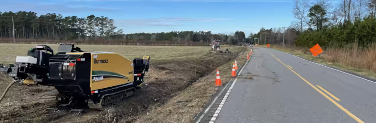
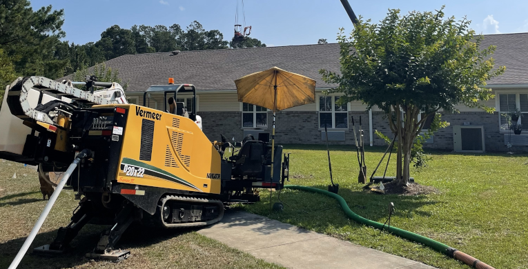
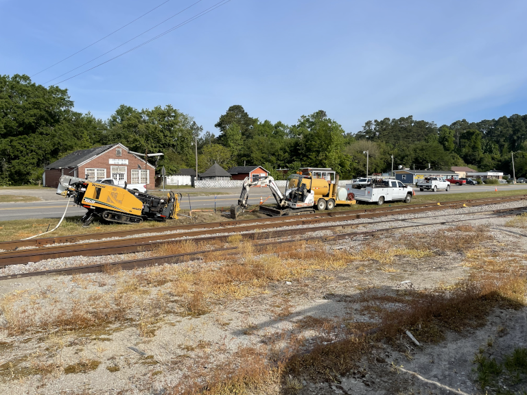
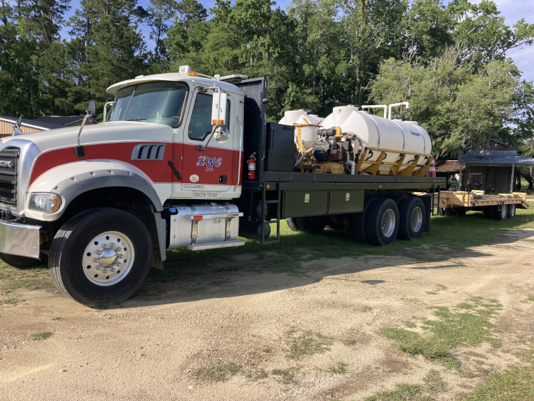
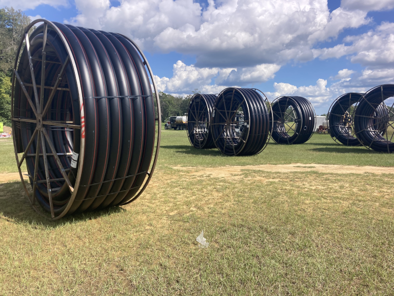
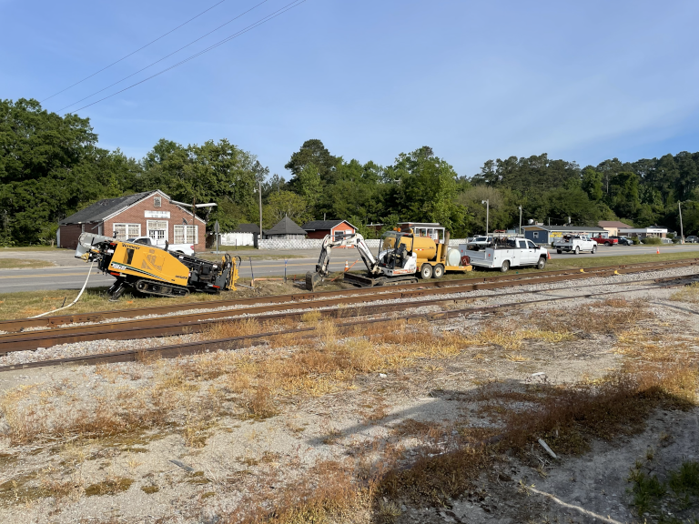
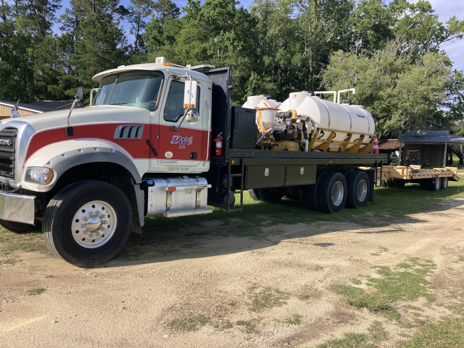
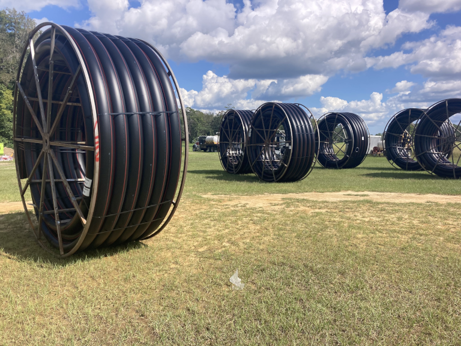

Horizontal Directional Drilling Experts
Electrical / Fiber / Gas / Sewer / Telecomm / Water
We specialize in underground utility construction; including, but not limited to horizontal directional drilling, boring, trenching, locating and mapping for fiber optic, CATV, telecommunications, water, sewer and gas. We are HPDE Fusion Certified and licensed for Boring & Tunneling (BT2)/Water & Sewer Lines (WL2) by the South Carolina Department of Labor Licensing and Regulation (LLR).
About Us

With 37 years of experience, we provide reliable, safe underground utility solutions using advanced drilling techniques. We specialize in horizontal directional drilling for utility construction; including fiber, CATV, telecommunications, gas, water and sewer. Our service area includes Conway, Florence, Georgetown, Kingstree, Marion, Myrtle Beach, Socastee, Surfside and all portions of Georgetown, Florence, Horry, Marion, and Williamsburg Counties. We have directional boring equipment capable of performing 2 - 14 inch diameter bores over a span of 1000 feet. Our fleet includes a Vermeer Navigator D20x22 Series II and D24x40 Series II with all necessary support equipment. Customer satisfaction is our goal; ensuring your job will be completed in a proper and timely manner. Our clients include Berkeley County Water and Sewer Authority, City of Conway, Farmers Telephone Cooperative, Georgetown County Water and Sewer District, Grand Strand Water and Sewer Authority, Horry Electric Cooperative, Mastec Utilities, Moncks Corner Water Works and Myrtle Beach International Airport.

Customer Satisfaction is our Priority!
 




